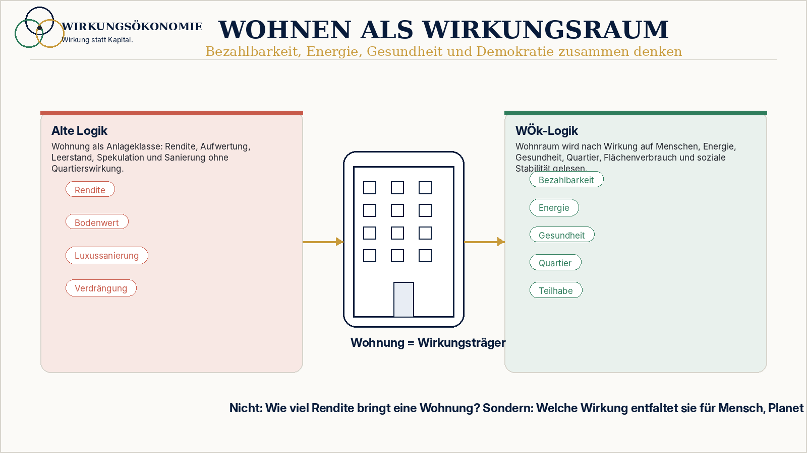

Was misst das alte System falsch?
Rendite, Bodenwert, Quadratmeterpreis, Auslastung, Modernisierungsumlage und Marktpreis.
 Wirkungsökonomie
Wirkungsökonomie
Für wen · Wohnen
Warum Miete, Boden, Sanierung und Quartier gemeinsam wirken.
Die Maßstabskrise des Wohnens entsteht, wenn Wohnungen primär als Anlageklasse gelesen werden. Rendite misst Kapitalbewegung, aber nicht, ob ein Quartier bezahlbar, gesund, energieeffizient und demokratisch stabil bleibt.
Wohnen wirkt immer mehrfach: auf Einkommen, Gesundheit, Bildung, Mobilität, Nachbarschaft, Energieverbrauch, kommunale Haushalte und Vertrauen.
Die WÖk macht deshalb nicht einfach Wohnungsmarktpolitik. Sie liest Wohnen als Wirkungsraum.
Maßstabskrise
Rendite, Bodenwert, Quadratmeterpreis, Auslastung, Modernisierungsumlage und Marktpreis.
Spekulation, Verdrängung, Leerstand als Wirkungsverlust, Sanierungskonflikte und Quartiere ohne soziale Stabilität.
Mietrecht, Förderung und Sanierungspflichten helfen punktuell, lösen aber nicht die gemeinsame Wirkung von Boden, Kapital, Energie und Quartier.
Wohnen wird nach Bezahlbarkeit, Energie, Gesundheit, Teilhabe, Quartiersresilienz und demokratischer Stabilität bewertet.

Fehlsteuerung
Wohnungsprobleme entstehen nicht nur aus zu wenig Angebot. Sie entstehen auch aus einem Maßstab, der Rendite sichtbar macht und Wirkungslast verdeckt.
Kapitalrendite kann steigen, während soziale Stabilität und kommunale Handlungsfähigkeit sinken.
Klimaschutz kann Verdrängung erzeugen, wenn Energie-, Miet- und Quartierswirkung getrennt bewertet werden.
Ungenutzter Wohnraum erzeugt Wirkungslast für Nachbarschaft, Kommune und Menschen, die Wohnraum suchen.
Wohnen wirkt auf Gesundheit, Bildung, Teilhabe, Mobilität, Pflege und demokratisches Vertrauen.
WÖk-Logik
Die WÖk sagt nicht, dass alle Mieten automatisch sinken. Sie macht sichtbar, welche Wohnmodelle langfristig bezahlbar, energieeffizient, gesund und sozial stabil wirken.
Das verändert die Bewertung von Investitionen: Eine energetische Sanierung mit stabiler Miete, Mieterstrom und Quartiersnutzen ist wirkungslogisch etwas anderes als Luxussanierung mit Verdrängung.
Eigentum bleibt möglich. Aber die Wirkung von Boden, Kapital, Miete und Sanierung wird nicht länger als private Nebenfolge behandelt.
Mietlogik wird mit Bezahlbarkeit, Energiepfad, Gesundheitswirkung und Quartiersstabilität verbunden.
Wohnmodelle werden danach gelesen, ob sie Nachbarschaft, Teilhabe und kommunale Stabilität stärken.
Klimaschutz und Bezahlbarkeit werden nicht gegeneinander ausgespielt, sondern als Wirkungspfad geprüft.
Bodenwert wird nicht nur als Kapitalwert, sondern als gesellschaftlicher Wirkungsraum gelesen.
Vorher / Nachher
Alte Logik
Anlageklasse, Kostenfaktor oder Quadratmeterprodukt.
WÖk-Logik
Wirkungsträger für Bezahlbarkeit, Energie, Gesundheit, Quartier und Demokratie.
Alte Logik
Investition mit Umlage- und Effizienzlogik.
WÖk-Logik
Wirkungspfad mit Klima-, Miet-, Gesundheits- und Quartierseffekt.
Alte Logik
Marktposition oder Spekulationsoption.
WÖk-Logik
Wirkungsverlust für Kommune, Nachbarschaft und soziale Stabilität.
Wirkungspfad
Der Pfad zeigt nicht nur Aktivität, sondern Rückkopplung: Wirkung wird sichtbar, bewertet und in Entscheidungen zurückgeführt.
Nichttrivialität
Dieselbe Maßnahme kann je nach Kontext Wirkung erster, zweiter und dritter Ordnung erzeugen. Deshalb braucht die WÖk Evaluation, Quellenklarheit und lernende Korrektur.
Wirkungsräume
Mensch, Planet und Demokratie bilden Bewertungsräume. In ihnen wird sichtbar, ob Zustände stabiler, verletzlicher, gerechter, riskanter oder regenerativer werden.
Wirkungskapital
Kapital entscheidet nicht allein, was wertvoll ist. Es wird danach gelesen, welche Richtung es verstärkt und ob es positive Netto-Wirkung ermöglicht.
Konkretes Beispiel
Eine energetische Sanierung mit stabiler Miete, Mieterstrom und Quartiersnutzen erzeugt andere Wirkung als eine Luxussanierung mit Verdrängung. Beide sind Investitionen, aber nicht dieselbe Wirkung.
Was nicht passiert
Die WÖk verspricht keine pauschal sinkenden Mieten. Sie macht Wirkungsunterschiede sichtbar.
Eigentum bleibt, aber Wirkung und Folgekosten von Boden und Wohnen werden klarer gelesen.
Sanierung bleibt wichtig. Entscheidend ist, ob sie Bezahlbarkeit und Quartier mitdenkt.
Diese Seite erklärt Systemlogik und ersetzt keine Miet- oder Rechtsberatung.
Erste Schritte
Frage nach Bezahlbarkeit, Energie, Gesundheit, Quartier und Verdrängungsrisiko.
Nicht jede Investition hat dieselbe Wirkung. Zielkonflikte explizit machen.
Wohnen mit Haushalten, Gesundheit, Mobilität und Beteiligung verbinden.
Vertiefung
Die nächste Frage lautet nicht nach einzelnen Nachhaltigkeitsmaßnahmen. Sie lautet: Welche alte Logik erzeugt das Problem, und wie kann Wirkung rückgekoppelt werden?
Primärlogik / Stand